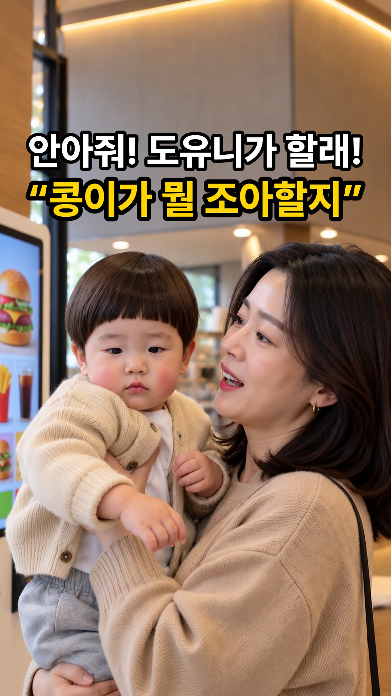
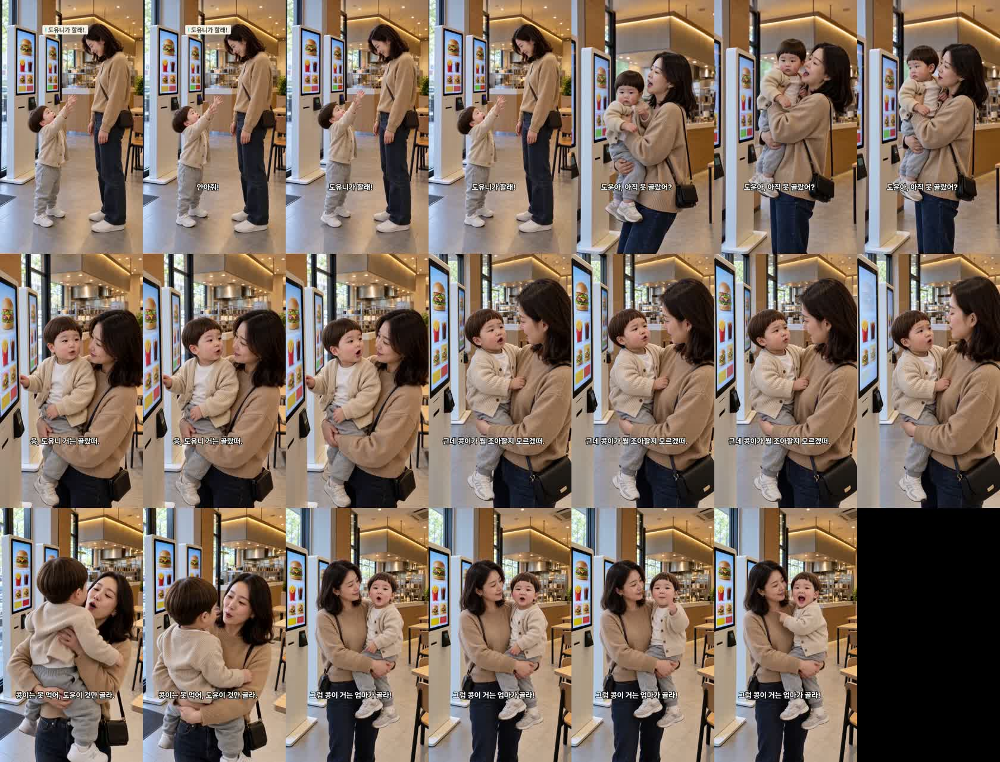

키오스크 편 — 완성본 검수
doyoon-kiosk-order-001 · R9 · 19.7초 · 6컷 · 허브 승인 큐 등록(work 0e3a5254)
완성본 · 썸네일

제목: 키오스크 주문을 맡은 두 살, 한참 고민한 진짜 이유
썸네일: 흰 줄 «안아줘! 도유니가 할래!» · 노란 줄 «콩이가 뭘 조아할지» · 엄마+도윤이(새 기본값 «어른 컷»)
썸네일: 흰 줄 «안아줘! 도유니가 할래!» · 노란 줄 «콩이가 뭘 조아할지» · 엄마+도윤이(새 기본값 «어른 컷»)
대표님께 확인 부탁드릴 것
1. 아기 발음 — «도유니 · 골랐떠 · 조아할지 · 모르겠떠». 받아쓰기는 표준어로 적어서 귀로만 판정할 수 있습니다.
2. 4번 컷 목소리 — 걱정하는 말투라 296Hz로 기준(330Hz)보다 낮습니다.
3. 6번 컷 — 도윤이가 앞 컷과 반대 팔에 안겨 있습니다.
2. 4번 컷 목소리 — 걱정하는 말투라 296Hz로 기준(330Hz)보다 낮습니다.
3. 6번 컷 — 도윤이가 앞 컷과 반대 팔에 안겨 있습니다.
제작 중 고친 것
3번 컷 소리 «골랐어» · 자막 «골랐떠» 어긋남 → 초안을 사전 꼴로 고치고 검사 ⑮ 추가(같은 실수 막음)
3·4·5번 말하는 도중 키오스크 화면이 엉터리 한글 주문 화면으로 바뀜 → «화면은 끝까지 같은 사진 칸»을 넣어 세 컷 재발주
3·4·5번 말하는 도중 키오스크 화면이 엉터리 한글 주문 화면으로 바뀜 → «화면은 끝까지 같은 사진 칸»을 넣어 세 컷 재발주
컷별
| 컷 | 대사 | 음높이 | 판정 |
|---|---|---|---|
| 1 | 안아줘! 도유니가 할래! | 도윤 457Hz | 통과 |
| 2 | 도윤아, 아직 못 골랐어? | 엄마 271Hz | 통과 |
| 3 | 응, 도유니 거는 골랐떠. | 도윤 327Hz | 재제작 2회 |
| 4 | 근데 콩이가 뭘 조아할지 모르겠떠. | 도윤 296Hz | 재발주 1회 · 음높이 확인 |
| 5 | 콩이는 못 먹어, 도윤이 것만 골라. | 엄마 204Hz | 재발주 1회 |
| 6 | 그럼 콩이 거는 엄마가 골라! | 도윤 356Hz | 통과 |
1초 간격 화면
